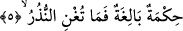
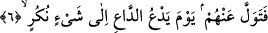

5. Bu büyük bir hikmettir. Fakat (yüz çevirene) uyarılar ne fayda verir!
“Bu büyük bir hikmettir.” Yâni eksiksiz, mükemmel bir hikmettir. Yahut, sakındırma,
nehy etme ve öğüt vermede amacına ulaşmış hikmettir. Kâmûs’ta hikmet, “ilim, hilim ve
Kur’ân” demektir, denilir. Müfredat’ta hikmet, “ilim ve fiil ile hakkı bulmak”tır.
Allah’a nisbetle hikmet, “eşyayı bilmek veya onları son derece muhkem bir halde icad
etmek”tir. İnsana göre hikmet ise, “varlıkları tanımak ve hayırları işlemek”tir. Hikmeti
ihtiva ettiği içindir ki, Kur’ân-ı Kerim, “hakîm” vasfıyla nitelenmiştir. Hikmet ilmî ve
amelî olmak üzere iki kısımdır. Konuşulan, ifâde edilen hikmet denilince; dînî ve şerî
ilimlerle, tasavvuf ve tarikat ilimleri akla gelir. Konuşulmayan, ifâdeye girmeyen hikmet
ise; hakikatin esrârı, gerçeğin sırları, dünyayı âhirete tercih eden âlimlerin
bilemedikleri, bilmemeleri îcab eden sırlardır ki, onlar bu sırlara muttalî olsalardı
anlayıp, içlerine sindiremeyeceklerinden zarar görür, mahv olurlardı.
“Fakat (yüz çevirene) uyarılar ne fayda verir!” Yâni uyarılar hiç bir şeye fayda
vermiyor. Yahut onlar yalanlayıp muhâlefet edince, hangi fayda onlara yararlı olabilir?
Yâni hiç bir yararı olmaz. “Fakat inanmayan bir topluma deliller ve uyarılar fayda
vermez.” (Yunus, 10/101). Bu âyette inkârcı nefislerin, kalp ve ruh korkutucu ve
sakındırıcılarının sakındırmasından faydalanamıyacağına işâret vardır. Zira ruh, Kur’an
sakındırıcısının mazharı göründüğü yerdir, kalp de hakikat inzarcısının mazharıdır.
6. Çağıranın görülmemiş bir şeye çağırdığı gün, sen de onlardan yüz çevir.
Sakındırmanın onları kesinlikle etkilemeyeceğini bildiğin için “çağıranın
görülmemiş bir şeye çağırdığı gün, sen de onlardan yüz çevir.”
Davetçi, İsrâfîl (a.s.)’dır. Beyt-i Makdis’in sahrâsına durarak Sûr’a üfürür, onları
çağırır. Şöyle diyerek seslenir: “Ey çürümüş kemikler, lime lime olup kesilmiş etler, ey
param parça dağılmış düşünceler! şüphesiz Allah ilâhî mahkemenin görülmesi için
toplanmanızı emreder.
Başka bir görüşe göre İsrâfîl (a.s.) sûra üfürür. Cebrâîl (a.s.) ölmüşleri çağırarak
kaydedildiği tarzda seslenir. Her iki görüşte de çağırma hakikattir, mecaz değildir. Bazı
müfessirlere göre ise dâvet mecâzîdir. Nasıl ki, Allah Teâlâ bir şeyi yaratmak murad
ettiği zaman, “kün” emrine gerek kalmadan, ilâhî irâdenin tecellîsiyle gerçekleşirse, bu
da öyledir. Tekvîn olayında “Kün” emri mecâzîdir. Dâvetine icâbet edilen dâvetçiye
muhâlefet edilmez. Mahşerin başlaması için İsrâfîl (a.s.) veya bir başkasına gerek
kalmaz. Buradaki dâvet, ilâhî meşîetin, irâde-i ilâhiyyenin infâzından ibarettir.
Fakir (Bursevî) derim ki, bu dâvet olayını hakikî mânâda kabul etmek daha yerinde